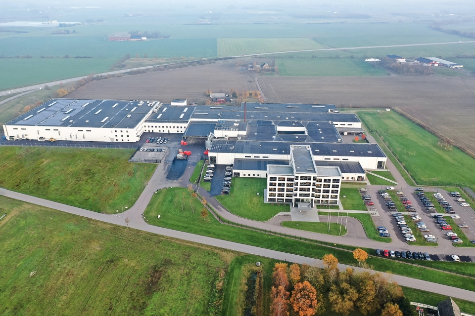
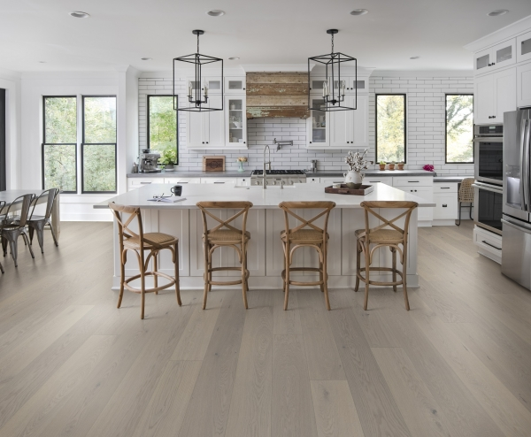
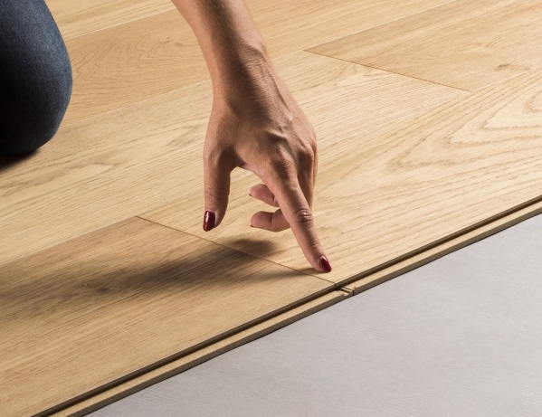

1993년에 설립된 Välinge Innovation은 바닥재 산업을 위한 기술 혁명을
개척했으며 전통적인 텅(혀) 앤 그루브(홈) 접착 방식에서 오늘날의 현대적인
클릭 기술로의 전환을 주도했다. Välinge Innovation은 최초의 기계 공학적인
잠금 시스템을 출시한 이후로 바닥, 가구 및 표면 기술에 대해 3500개 이상의
특허를 취득했으며 전 세계적으로 300개 이상의 라이센스 사용자가 이 혁신
기술을 사용하고 있다. 그들의 모든 기술과 개념은 세계에서 가장 진보된
바닥재 및 가구 R&D 센터 중 하나인 스웨덴 Viken의 HQ에서 개발되었다. 또한
최첨단 바닥재 생산 시설과 기술 지원, 테스트 및 샘플 제조 허브가 있는
곳이기도 하여 라이센시(특허사용자)에게 모든 단계에서 혁신과 품질을
보장한다. Välinge에서 혁신은 모든 것에 내재되어 있는 것 같다. 우리는
‘클릭 철학’에 대해 자세히 알아보기 위해 잠금 시스템에 대해 아시아 지역
관리자인 Magnus Holgesson과 대화를 나눴다.

클릭 잠금 시스템이 있는 바닥을 찾아야 하는 이유는 무엇입니까? 그냥
접착제로 붙이거나 하면 안 될까요?
첫째, 기존의 마루판을 지층에 풀이나 못으로 고정하는 방식은 시공기술이나
시공시간 면에서 뿐만 아니라 분명한 단점이 있다. 고정된 바닥 설치는 바닥
판자가 온도와 습도의 변화에 따라 움직이지 못하게 하여 시간이 지남에
따라 균열, 틈 또는 고르지 못한 단차 부분이 생길 수 있다. 이런 대부분의
상황에서 클릭 잠금 시스템을 추가하면 바닥 문제가 개선된다. 사람들이 잠금
시스템을 생각할 때 일반적으로 생각나는 것은 뛰어난 편의성과 내구성이다.
그리고 그들은 당연히 많은 주목을 받는다.
하지만 그 이상의 것이
있다. 특히, 설치 속도는 매우 흥미롭다. 5G와 같은 빠르고 쉬운 잠금
시스템으로 바닥을 설치하면, 시공자는 수요를 따라잡고 주당 더 많은 작업을
완료할 수가 있다. 이는 시공자들의 일감 증대와 고객만족을 의미한다고 말할
수 있다. 이런 혜택을 받는 것은 전문 설치업체만이 아니다. DIY 설치의
경우, 오늘날 바쁜 라이프스타일에서 시간 절약이 매우 매력적이다. 접착식
바닥재와 비교해서, 언급할 가치가 있는 또 다른 몇 가지 잠금 시스템
이점은, 설치 중 인체공학 및 작업 환경을 들 수 있다.
클릭(Fold-Down) 잠금 시스템은, 기존 온돌마루, Dry Back 에서와 같이 대량
사용되는 바닥 접착제(풀) 화학 성분에서 발생하는 유독가스에 노출될 일이
없고, 접착제를 바르는 힘든 작업도 하지 않아, 효율적이고 편안한 작업을 할
수 있는 환경을 제공한다. 5G와 같은 Fold-Down 바닥 잠금 시스템은 설치
시공자에게 훨씬 더 부드럽기 때문에 피로와 반복적인 긴장 부상의 위험을
줄이는 데 큰 도움이 된다. 5G에는 화학 물질이나 접착제가 필요하지 않다.
바닥 패널을 함께 클릭 조립하기만 하면 되어서, 접착제가 마를 때까지 또한
환기해야만 하는 시간을 기다릴 필요 없이 즉시 입주하여 바닥을 사용할 수
있다. 이보다 더 빠르고 쉽고 안전할 수 없다.
